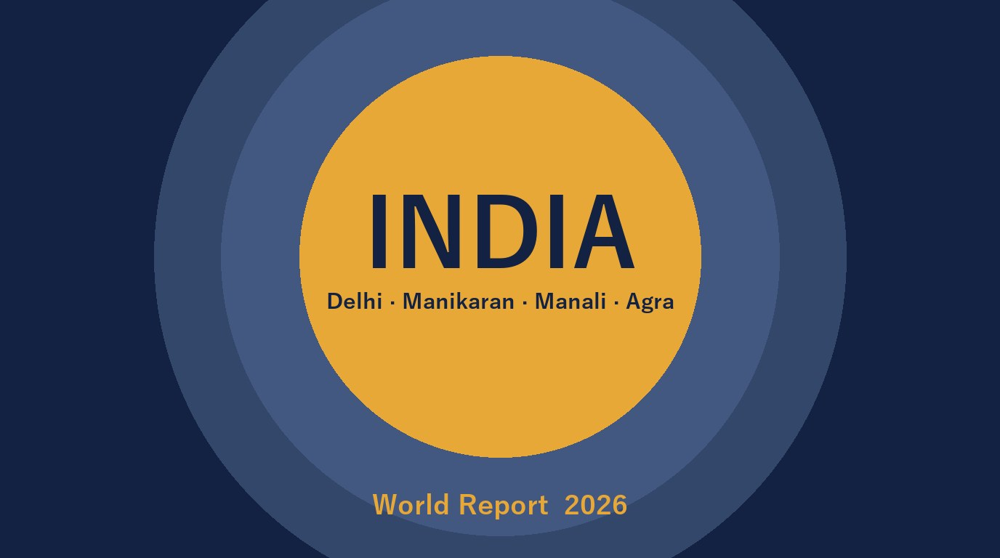

2026年 インド・デリー／マナリ／アグラ マーケット調査レポート
ベジタリアン文化・強い季節性・UPI決済から読み解く、外食・食品ビジネス参入の前提条件

調査概要：訪問4拠点を6つのテーマで整理
調査目的：インドの外食・消費市場を、日本企業の進出検討の観点で整理する。①外食・カフェ ②観光地飲食 ③ベジ・宗教・規制 ④デリバリー・決済 ⑤日本食 ⑥温泉の6テーマ構成。
調査対象エリア：デリー首都圏（NCR）／ヒマーチャル・プラデーシュ州のカソール・マニカラン・マナリ（カラタ・バシスト含む）／アグラ（タージマハル周辺）
調査日程：現地訪問 2026年10月10日〜17日（8日間）／デスクリサーチ 2026年10月27日時点の公開情報
調査手法：公開情報（公的機関・業界団体・上場企業の開示、報道、JETRO等）に、現地観察（調査者の体験・写真・価格札・領収書）を加えて分析。全項目に出典・年月・信頼度を付与しています。体系的なヒアリング調査は行っておらず、現地観察は調査者1名（n=1）の体験です。
Key Finding：「巨大市場＝どこでも同じ」ではありません。「ベジ・宗教という前提条件」と「国内客中心＋強い季節性」という2つの構造が、立地と業態の選択を左右します。
6つのテーマから見えた、インド市場攻略の前提条件
01. ベジ・宗教配慮が“設計の前提”
ベジタリアン比率は調査の定義により約17〜39%と幅があります。牛・豚・酒・根菜への配慮と、FSSAIの緑（ベジ）／茶（非ベジ）表示は、参入条件として設計の初期から組み込む必要があります。
02. 需要の中心は国内客、季節で需要が激変
クル・マナリの外国人は2025年1〜9月累計でわずか約0.4%。6月のピークから7月は約85%減少します。固定費の重い業態はリスクが大きく、季節変動に耐える形態の検討が必要です。
03. 決済・配達は成熟、手数料は高水準
UPIは2026年9月に月240.7億件。クイックコマース（Blinkit）の取扱額は前年比+79%と急成長する一方、配達プラットフォームの手数料は20〜30%台との主張があり、価格設計に織り込む必要があります。
04. 温泉は聖地性が強く、商業化には壁
マニカランの温泉は巡礼の聖地で、2025年に商業利用への反対が報じられました。一方、マナリ近郊には民営の有料浴場も営業しています。日本の温泉・入浴文化の強みを活かせる余地は仮説段階で、本レポートでは観察と公開情報を分けて整理しています。
※日本食店は630店（インドネシアの約1/10）と未成熟な市場です。
続きはレポート購入で読めます
フルレポート（PDF・30ページ）には、外食・カフェ市場、観光地（クル・マナリ／アグラ）の飲食、ベジ・宗教・規制とFSSAI/輸入ルール、UPI・デリバリー・クイックコマース、日本食（CoCo壱番屋のケーススタディ）、温泉6ページ（現地観察・市場・聖地の商業化・日本との比較）、現地観察（運営リスク・価格データ・領収書6件）、日本企業への示唆を収録しています。
フルレポートの内容
- 調査概要・訪問行程（実際の行程）
- インド外食市場の全体像（市場規模・チェーン化・Gen Z）
- デリーNCRのカフェ市場（国内勢の拡大・Starbucks）
- 観光地の飲食：クル・マナリの季節性、カソールの外国人需要、アグラ（タージマハル）の二重価格
- ベジタリアン比率・宗教別の食規範・州ごとの規制、FSSAI表示と輸入食品のルール
- UPI・フードデリバリー・クイックコマース、プラットフォーム手数料と収益構造
- 日本食市場とケーススタディ（CoCo壱番屋）
- 温泉：マニカラン／バシスト／カラタ周辺の比較、ウェルネス市場と政策、聖地の商業化、日本の温泉との比較（差別化の仮説）
- 現地観察：運営リスク、価格データ（スーパー・メニュー）、領収書6件の分析
- 日本企業への示唆（6つのポイント）・データの限界・引用・参考文献一覧
決済は Stripe を利用しています。購入後、PDF ダウンロードリンクが表示されます。